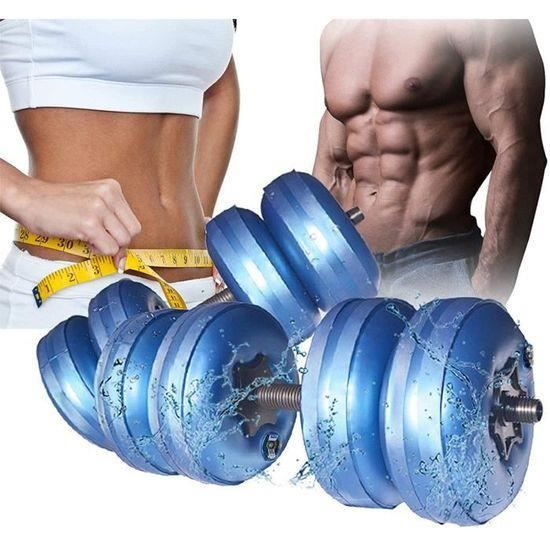

HALTERE D’EAU
haltères peuvent supporter 5 à 20 kg.
La poignée antidérapante est plus solide que les autres.
Exercez vos biceps, triceps, bras. Convertit la graisse en muscle
. Maintient le haut du corps en bonne santé et raffermit votre peau. Cet équipement de fitness à la maison est indispensable.

Bouteille d'eau en plastique,
style haltère, avec poignée,
pour conserver de l'eau ou d'autres
boissons, presse-agrumes, grande taille, 2,2 l

kit Haltère à eau réglable 10kg
les haltères musculation bleu

Bouteille d'eau de sport multi-usages 2021 l,
carafe à eau Portable en forme d'haltère,
équipement d'entraînement à domicile